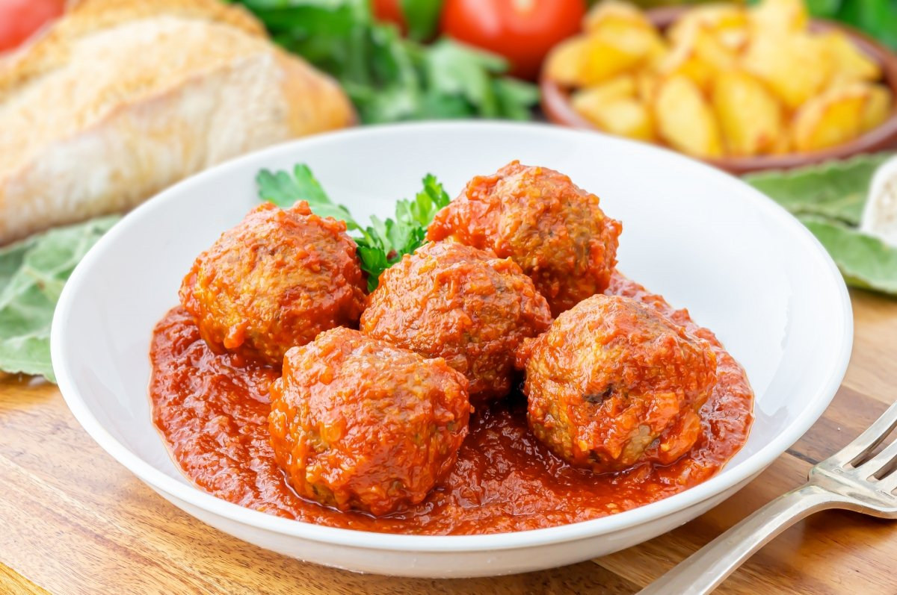
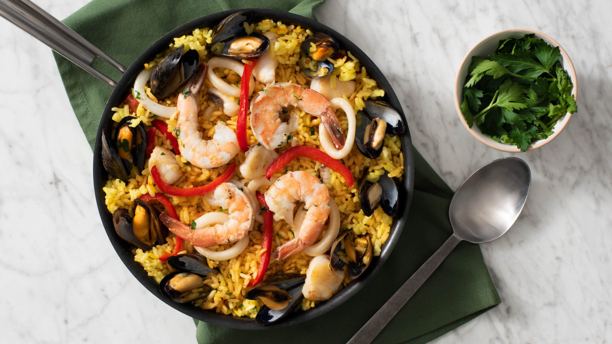
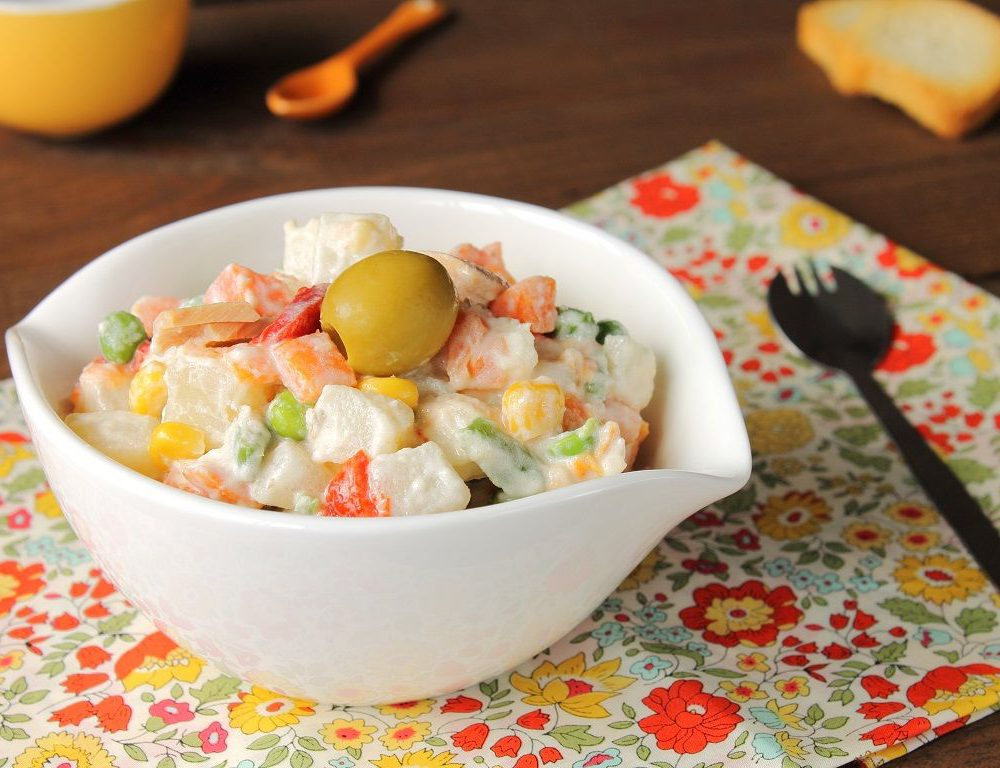
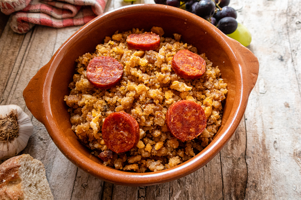

La mejor tortilla...con cebolla
Alimento preparado con huevo batido, cuajado con aceite en la sartén y de forma redonda o alargada, al que a veces se añaden otros ingredientes.

Alimento preparado con huevo batido, cuajado con aceite en la sartén y de forma redonda o alargada, al que a veces se añaden otros ingredientes.
Una albóndiga es una bola de carne picada, generalmente de res y a veces de pescado mezclada con huevos y diversos condimentos, tales como perejil, comino, etcétera; aunque también hay una variable vegetariana hecha a base de seitán
Los boquerones en vinagre o bocartes en vinagre son una especie de aperitivo o tapa en España en el que su principal ingrediente son los boquerones, un pez de pequeñas dimensiones (20 cm) cuyos lomos han sido previamente marinados en vinagre y en abundante ajo y perejil.

La paella es un plato originario de Valencia (España). Su ingrediente principal es el arroz, habitualmente acompañado por mariscos, pollo, legumbres y otros alimentos.
La ensalada rusa o ensaladilla rusa, también conocida originariamente como ensalada Olivier, es una ensalada creada en Rusia por el chef francés Lucien Olivier.
Es un plato que tradicionalmente se preparaba en el medio rural como comida principal. Se trata de un refrito sencillo de ajo, tomate, pimiento y cebolla al que se añade, para aprovecharlo, el pan duro.
A tu vera, siempre a la verita tuya... hasta que nos compres!